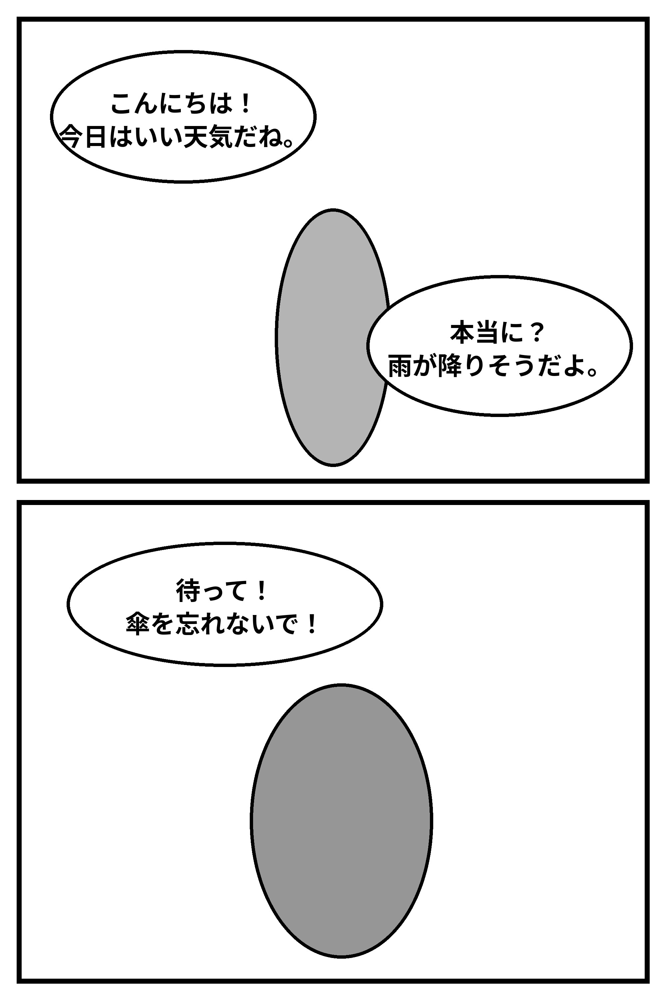

Serve this folder on two ports, then open http://localhost:8000/.
Default rules: ANY of file size >= 500 KB, width >= 2000 px.
1. 4000×3000 PNG (41 KB) shown at 400px — width rule → marked
2. 1000×750 JPG (863 KB), same origin — size from Resource Timing → marked
3. 300×200 JPG (2 KB) → not marked
4. 1000×750 JPG (863 KB), cross origin — size from service worker HEAD → marked

5. 1×1 data: URL GIF → not marked

6. Inserted after 2s — MutationObserver → marked
7. CSS background 2400×800 (30 KB) — width rule → marked (batch 5)
8. Hidden 4000×3000 PNG → not marked

9. 1000×750 JPG (863 KB) as blob: URL, like MangaDex — size read in page → marked
10. 2000×3000 Japanese speech bubbles — width rule → marked + translated (needs translation enabled)

11. Same-origin canvas in a 400px overflow:hidden box — marked + translated, overlay cut at the box edge
12. Canvas drawn 3s after load — marked at once, translated only after it is drawn
13. Cross-origin (tainted) canvas — marked, translation fails ("Tainted canvases may not be exported")
14. Lazy-loaded JPG below the fold → marked after scrolling